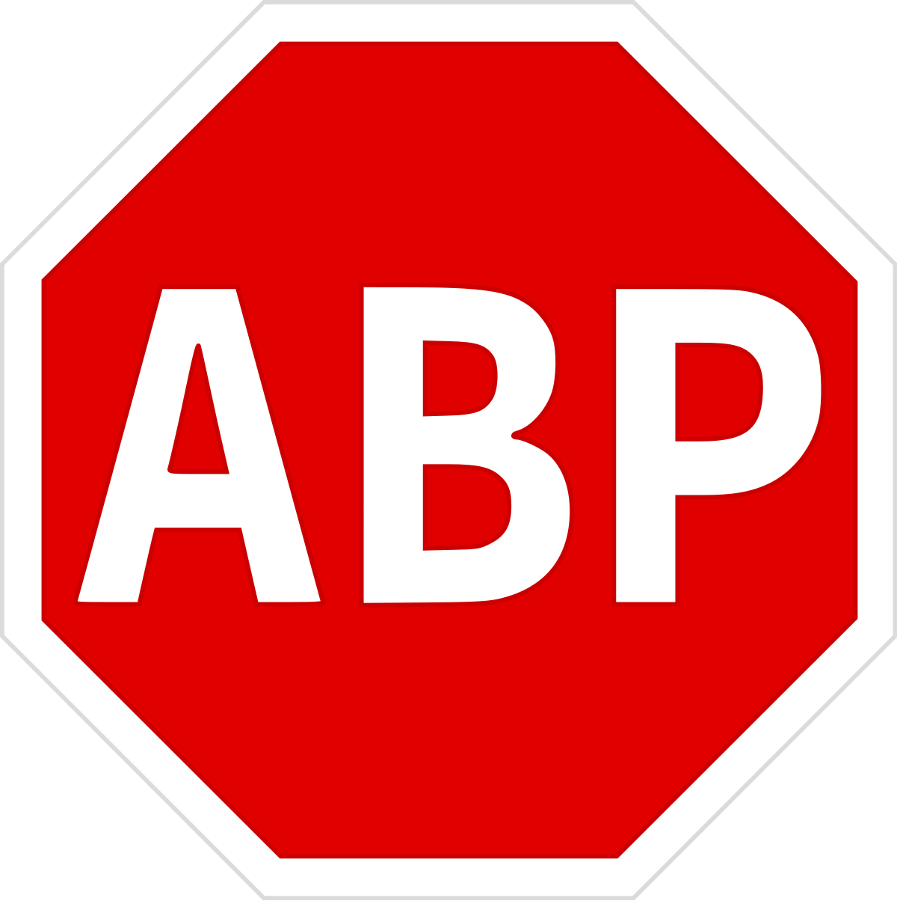

Cryptojacking
Definition
Cryptojacking is a malware that uses multiple computers connected in nodes to mine cryptocurrency like bitcoin for the central node. Central node being the computer of the criminal.
While this malware may not damage your computer or steal your data (but can if programmed so), it will slow down your computer by a crazy amount, as it uses your hardware to mine.
Signs of Cryptojacking
Luckily, spotting cryptojacking can be pretty easy. Signs you have a crypto mining malware are:
- A noticeable slowdown in device performance
- Overheating
- Increases in electricity bills
Prevention
Cryptojacking malware can be acquired by downloading files like any other, but also by browsing the internet. Some websites have cryptojacking built into them. Best way to prevent this is with anti cryptojacking browser extensions and ad-blockers(we recommend adblock plus). Also make sure to check the task manager for weird processes that use too much power, these are most likely malware and can be removed with an antivirus.
